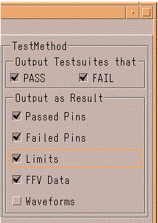

Test method settings
Apart from the additional FFV Data and Waveforms checkbox, the settings you can make for test method-based test suites are identical to those for parametric tests. See Parametric test settings for a description of these checkboxes. A test method-based test suite outputs data to the log stream at the execution of the TEST API.
The FFV Data checkbox lets you specify whether you want first failing vector (FFV) information to be added to the report. See Settings on the FFV tab for a description of the additional options you can set for the FFV output.
The Waveforms checkbox enables the graphical presentation of result data of analog test methods, like captured waveforms and FFTs, in the output of the Event Formatter (Appendix C: Event Formatter Output Examples shows how these results are presented in the output).

Functional changes
- Introduced before SmarTest 6.3.2